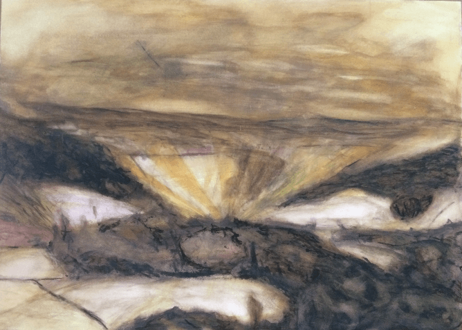

I believe that the crises we face in ecology, governance, and economy, are no match for the collective power of our imaginations. This whole beautiful mess that we are in does keep me up at night though.
Throughout my life I have made small forays into many different fields of activity to try to understand the how of this.I have spent three years working as a market gardener/farmer, but now I am studying web development. My preference is for a boring rational world, but the majority of my friends are artists, and I recently spent a year studying watercolour painting. My head out-skills my hands by a large measure, but I have done more work with my hands than my head as of late. From one perspective this might all appear an exercise in contradictions.
To me it is not a matter of contradiction however. I am fascinated by systems. I engaged myself as a farmer because it is a common baseline for everybody. Rich or poor, from the east, west, north or south, everybody needs to eat. Coincidentally it is also one of the industries causing the greatest destruction on the planet, and one of the ones in which injustice is most rampant.
Arts? I used to (tongue in cheek) say that I hated art. Why are all these people wasting their time with colour when we have a global emergency!? The truth known to many before me is that without arts, without culture, human society is meaningless.
I have worked with my hands because of their lack of capacity, not in spite of it. No matter how advanced our society becomes, we are physical beings, who live in physical constructions. While more and more work is done by machines today, at the base of it all are human hands. In order to design systems or products for a human world, I recognized I needed to understand the activity of the marvellous arm-ends.
It is the flip side of this coin that has brought me to web development. We are physical beings but we increasingly live in a digitized world. Virtual meetings. Virtual friendships. Governance, economics, and people’s imaginations, are all rapidly transforming in this new digital age. The jury is still out on whether it will help us in the coming crises, but for better or for worse it will be immensely impactful. It has become part of the beautiful mess.
So what have I actually done up until now to aid the cause of the just, sustainable, and beautiful? In 2011 I was a core member of Occupy Toronto, a training camp for consensus decision making and non-violent communication in downtown Toronto in solidarity with other Occupy camps worldwide. After four months it became clear that we had bitten off more than we could chew. So I went back to farming.
In 2013 I made my next effort, co-creating a six month walking studies journey across Europe, Classroom Alive. Thirty-three people walked on the initial journey. Now, three years later more than one hundred people have participated in some part of one of the six journeys that have taken place. Can it change the world? I don’t know, but the response has been so overwhelmingly positive that now we are working on growing it.
More recently I worked as a manager at a café serving a mixed clientele of the wealthy and the homeless, staffed by many people from the at risk community. This is a much more tangible “doing good” operation, but I do not believe that we need limit ourselves to only such operations. They are important and necessary. Unquestionably. However as I said at the beginning, “The crises we face are no match for the collective power of our imaginations.” I am interested in what are the imaginations that are going to carry us forward into a more just, sustainable, and beautiful world. Let’s make it happen!